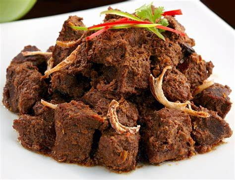
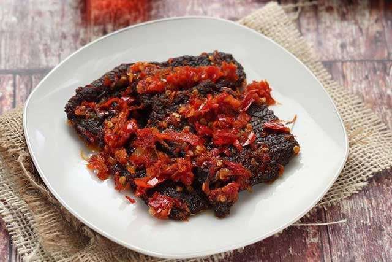
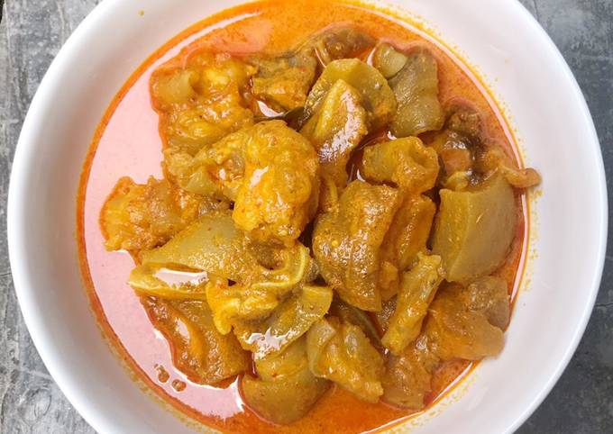
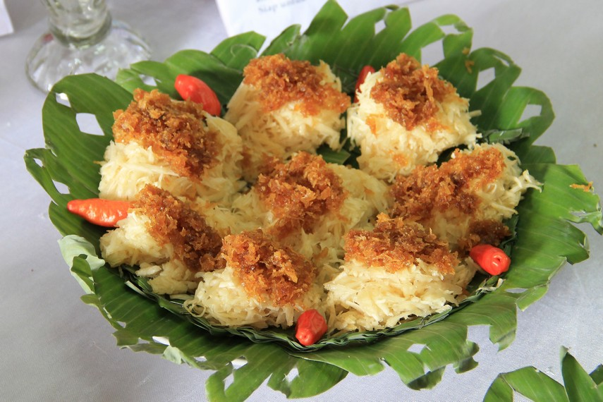

Rendang

Daging (biasanya menggunakan daging sapi) - potong sesuai keinginan, sekitar 1 kg
Santan kelapa (santan kental) - sekitar 400 ml
Santan encer - sekitar 600 ml
Serai (geprek bagian putihnya) - 2 batang
Daun jeruk - 5 lembar
Daun salam - 3 lembar
Lengkuas (laos) - sekitar 2 cm, memarkan
Gula merah - 1-2 potong, secukupnya
Garam - secukupnya
Minyak untuk menumis
Air secukupnya
Bumbu Halus:
Bawang merah - sekitar 10 butir
Bawang putih - sekitar 5 siung
Cabai merah kering - 10-15 buah (sesuaikan dengan tingkat kepedasan yang diinginkan)
Cabai rawit (opsional, jika ingin lebih pedas) - 5-10 buah
Jahe - sekitar 2 cm
Kunyit - sekitar 2 cm (atau 1 sendok teh bubuk kunyit)
Ketumbar bubuk - 1 sendok teh
Jintan - setengah sendok teh
Merica - setengah sendok teh
Kemiri - 4-5 butir
Dendeng

Daging sapi (biasanya menggunakan daging bagian has dalam) - sekitar 500 gram, potong tipis
Kecap manis - sekitar 3 sendok makan
Gula merah - 1-2 potong, secukupnya
Air - sekitar 100 ml
Minyak goreng - untuk menggoreng
Bumbu Halus:
Bawang putih - sekitar 3-4 siung
Bawang merah - sekitar 5-6 butir
Kemiri - 2-3 butir
Lengkuas - sekitar 2 cm, memarkan
Jahe - sekitar 2 cm
Ketumbar - 1 sendok teh
Kepala Kakap

Bahan-bahan:
2 kepala kakap, bersihkan dan belah dua
3 siung bawang putih, cincang halus
1 ruas jahe, parut
1 sendok teh merica bubuk
1 sendok teh garam (atau sesuai selera)
2 sendok makan tepung terigu
Minyak untuk menggoreng
Ayam Bakar

Bahan-bahan:
1 ekor ayam, potong menjadi beberapa bagian sesuai selera (biasanya 8-10 potong)
Bumbu Marinasi:
4 siung bawang putih, haluskan
2 cm jahe, parut
2 sendok makan kecap manis
1 sendok makan kecap asin
1 sendok makan madu atau gula (opsional, untuk rasa manis)
1 sendok teh merica bubuk
1 sendok teh bubuk ketumbar
Garam secukupnya
Jeruk nipis atau jeruk lemon untuk perasan
Ayam Pop

Bahan-bahan:
1 ekor ayam, potong menjadi bagian-bagian sesuai selera (biasanya 8-10 potong)
Minyak goreng secukupnya untuk menggoreng
Bumbu Halus:
6-8 siung bawang putih
6-8 buah cabai rawit (sesuai selera kepedasan)
3-4 buah cabai merah besar (boleh dihapus bijinya untuk mengurangi kepedasan)
2 cm jahe
2 cm kunyit (atau 1 sendok teh bubuk kunyit)
2 cm lengkuas (laos)
Garam secukupnya
Bumbu untuk Penyajian:
Timun, tomat, dan daun kemangi sebagai lalapan
Sambal atau saus sambal (opsional)
Telor Dadar

Bahan-bahan:
4 butir telur ayam
2 siung bawang putih, haluskan atau cincang halus
2 siung bawang merah, haluskan atau cincang halus
2 cabai merah besar, iris tipis (opsional, sesuai selera pedas)
1 batang daun bawang, iris halus
1 batang serai, memarkan bagian putihnya
Garam secukupnya
Merica secukupnya
Minyak untuk menumis
Sate Padang

Bahan-bahan:
Untuk Sate:
500 gram daging sapi (daging bagian paha atau dada), potong kotak kecil
20 tusuk sate, rendam dalam air agar tidak gosong saat dipanggang
Bumbu Marinasi:
4 siung bawang putih, haluskan
2 cm jahe, parut halus
1 sendok makan kecap manis
1 sendok makan minyak sayur
Garam secukupnya
Bumbu Kacang:
150 gram kacang tanah, sangrai dan haluskan
3 siung bawang putih, goreng atau tumis hingga kecokelatan
3 buah cabai merah (sesuai selera pedas), buang biji dan potong-potong
2 cm jahe, parut halus
2 lembar daun jeruk
1 batang serai, memarkan bagian putihnya
1 sendok teh gula merah atau gula pasir
Garam secukupnya
Air secukupnya
Minyak untuk menumis
Tunjang
Bahan-bahan:
500 gram jantung sapi, bersihkan dan potong-potong
2 batang serai, memarkan bagian putihnya
2 lembar daun salam
2 lembar daun jeruk
2 cm lengkuas, memarkan
1 liter air
Minyak untuk menumis
Bumbu Halus:
6 butir bawang merah
4 siung bawang putih
3 cm jahe
3 cm kunyit
4 buah cabai merah (atau sesuai selera pedas)
2 buah cabai rawit (jika suka lebih pedas)
1 sendok teh ketumbar
Garam secukupnya
Soto Padang

Bahan-bahan:
500 gram daging sapi (bagian dada atau bagian yang memiliki sedikit lemak), potong-potong
200 gram mie soun, rendam air panas, tiriskan
2 batang serai, memarkan
2 lembar daun jeruk
2 lembar daun salam
2 cm lengkuas, memarkan
2 liter air
Garam secukupnya
Minyak untuk menumis
Bumbu Halus:
6 butir bawang merah
4 siung bawang putih
3 cm jahe
3 cm kunyit
2 cm lengkuas
2 batang sereh, bagian putihnya saja
4 butir kemiri, sangrai
2 sendok teh ketumbar
2 sendok teh merica butiran
Bahan Pelengkap (opsional):
Telur rebus, potong-potong
Kerupuk
Bawang goreng
Seledri, iris halus
Jeruk nipis
Kacimuih
Bahan-bahan:
Bagian Ketan:
500 gram ketan, rendam semalam dan tiriskan
Daun pisang untuk alas
Bagian Kelapa Parut:
200 gram kelapa parut, sangrai hingga agak kering
100 gram gula merah atau gula pasir
Sedikit garam secukupnya
Copyright@Kelompok 2 2023